To understand the scope and meaning of biosphere
To understand the meaning of ecosystem, its components, functions and biodiversity
To the major biomes of the world
To know the need for the conservation of biomes
Biosphere, the fourth sphere of the Earth, is a life supporting layer that exists on the earth’s surface. This layer on earth encompasses the Lithosphere, Hydrosphere and Atmosphere. It includes flora and fauna that thrive on or near the earth’s surface. The vertical range of the biosphere is approximately 20 km, which is measured from the ocean floor to the troposphere. However, most plants and animals live in a very narrow section for about 1 km above and below the Mean Sea Level (MSL). Biosphere is made up of different ecosystems and biomes. All living things, large or small, are grouped into species.The area in which an animal, plant or micro organism lives is called its habitat. A wide variety of plants and animals live in a particular habitat known as biodiversity.
VERTICAL RANGE OF BIOSPHERE ON EARTH
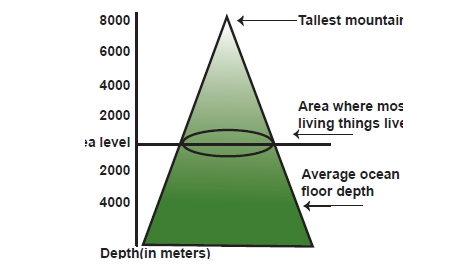
An ecosystem is a community, where all living organisms live and interact with one another and also with their non-living environment such as land, soil, air, water etc. Ecosystems range in size from the smallest units (Example bark of a tree) that can sustain life to the global ecosystem or ecosphere. (Example Cropland, Pond ecosystem, Forest ecosystem, Desert ecosystem etc.). Biosphere harbours all ecosystems on the earth and sustains life forms including mankind.
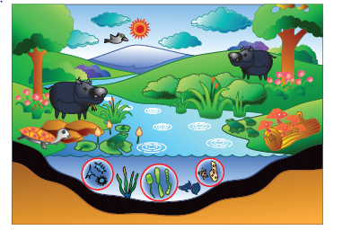
Narrate the forest ecosystem in your own words
The branch of science that deals about ecosystem is called Ecology.
A person who studies ecology is referred to as an Ecologist.
An ecosystem consists of three basic components, namely
A) Abiotic components
B) Biotic components and
C) Energy component
Abiotic components include the non-living, inorganic, physical and chemical factors in the environment. Eg. Land, Air ,Water, Calcium, Iron etc.
Biotic components include plants, animals and micro organisms. Biotic components can be classified into three categories :
Producers are self nourishing components of the ecosystem. Hence they are called Autotrophs. They are found both on land and water. Eg. Plants, Algae, Bacteria etc.
Consumers are those that depend on producers, directly or indirectly. Hence they are called Heterotrophs.
The common category of consumers is:
Primary consumers depend on producers for their food. They are exclusively herbivores. Example zebra, goat etc.
Secondary consumers are small carnivores i.e., they consume herbivores. Example Lion, snake etc.
Tertiary consumers are top carnivores that prey on both herbivores and carnivores. Example Owl, crocodile etc.
Decomposers are some organisms that are incapable of preparing its own food. They live on dead and decaying plants and animals. Hence they are called Saprotrophs. Example, fungus, mushrooms etc.
Find the etymology of Herbivores, carnivores, omnivores and scavengers using dictionary
All organisms in the biosphere use energy to work and convert one form of energy into another. The Sun is the ultimate source of energy for the biosphere as a whole. The solar energy gets transformed into other forms of energy through the various components in the ecosystem. The producers, consumers and the decomposers contribute a lot to the energy flow in an ecosystem.
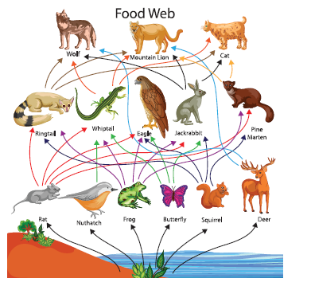
The living organisms form an interacting set of flora and fauna which are organized into trophic levels, food chains and food webs. The functioning of an ecosystem depends on the pattern of the energy flow, as it helps in the distribution and circulation of the organic and inorganic matter within an ecosystem. Energy flow generally takes place in a hierarchical order in an ecosystem through various levels. These levels are called trophic levels.
The chain of transformation of energy from one group of organisms to another, through various trophic levels is called a food chain. A system of interlocking and interdependent food chains is called a food web.
Biodiversity or biological diversity refers to a wide variety of living organisms (plants, animals and other micro organisms) which live in a habitat. It is highly influenced by topography, climate as well as human activities. It represents the strength of the biological resources of a place on earth. In biodiversity, each species, no matter how big or small, has an important role to play in the ecosystem. It maintains the ecological balance and facilitates social benefits such as tourism, education, research etcetera over an area.
The extinction of species (flora and fauna) due to human and natural influences is called loss of bio diversity.
A healthy eco system provides clean water, pure water, enriched soil, food, raw materials, medicines etc. Hence stable biosphere has to be conserved.
A biome is a geographically extensive ecosystem where all flora and fauna are found collectively. It is the total assemblage of plant and animal life interacting within the biosphere. Biomes are defined by abiotic factors like, relief, climate, soils and vegetation. They are classified into two broad categories, terrestrial biomes and aquatic biomes.
An ecological region that has lost more than 70 percent of its original habitat is considered a hotspot.
Hotspots in India are the Himalayas, Western Ghats, Indo Burma Region and Sundaland.
There are 34 areas around the world which are qualified as biodiversity hotspots
Terrestrial biomes are a group of living organisms that live and interact with one another on land. They are mainly determined by temperature and rainfall. Some of the major terrestrial biomes of the world are
A. Tropical Forest Biomes
B. Tropical Savanna Biomes
C. Desert Biomes
D. Temperate Grassland Biomes
E. Tundra Biomes
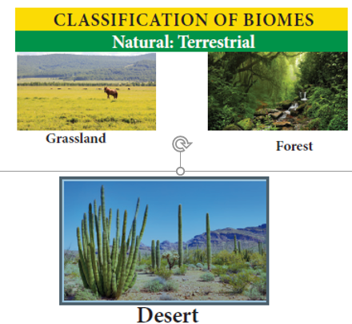
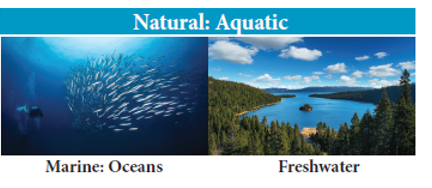
The tropical forest biome is comprised of several sub-biomes, including evergreen rainforest, seasonal deciduous forest etc.
Tropical forests have the highest biodiversity and primary productivity of any of the terrestrial biomes. The Amazon basin, Congo basin and Indonesian islands are the major regions of this biome. These regions have very dense forests and so have great economic importance.
Human settlements are found scattered here. They sustain their livelihood through food gathering, fishing, lumbering and shifting cultivation. Due to the humid nature of this biome, the people get afflicted to tropical diseases like malaria, yellow fever etc. The chief trees found here are rubber, bamboo, ebony, etcetra. Bats, pheasants, jaguars, elephants, monkeys etcetra. are the important birds and animals found here.
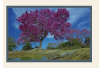
The U.S. National Cancer Institute has identified about 70 percent of the plants used for treating cancer. Which are found only in rain forests? Example. Lapacho.
Tropical grasslands are generally found between tropical forests and deserts. Tropical Savanna biomes are found between 10 degree to 20 degree Noth and South latitudes. These grasslands are generally flat and are found in the Sahel, south of Sahara in East Africa and in Australia. This biome is generally hot and dry and experiences moderate to low rainfall. So, the grass which grow here are tall and sharp. Hence the chief occupation of the people found here is herding. The primitive people living here are nomadic. The common animals found here are the lion, leopard, tiger, deer, zebra, giraffe etcetera. Flora such as Rhodes grass, red oats grass, lemon grass etcetera. is found in this biome.
Of late, parts of the Savanna grasslands are being converted into farmlands, which pose a great threat to the wide range of fauna. For example, the population of the big cats like cheetah, lion etcetera are dwindling drastically.
Deserts are usually found on the western margins of the continents between 20 degree and 30 degree North and South latitudes. The annual rainfall is less than 25 cm in these regions. Due to the lack of rainfall and arid conditions, these regions do not possess any vegetation but have special vegetation type called Xerophytes. As the soil is sandy and saline, deserts remain agriculturally unproductive. Drought resistant thorny scrubs and bushes, palms are found here.
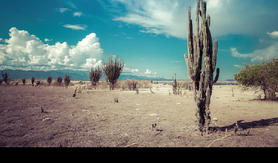
Tribal people who live here practice food gathering and hunting. They move their temporary settlements frequently in search of pastures. Transportation becomes very difficult here and is carried on by camels. Reptiles like snakes, lizards, scorpions etcetera are most commonly found here.
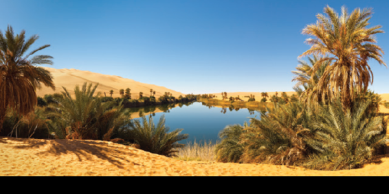
An oasis is a fertile fresh water source found in deserts and semi-arid regions. Oases are fed by springs. Crops like date palms, figs, citrus fruits, maize etcetera are cultivated near these oases.
Temperate Grasslands are usually found in the interior of the continents and are characterized by large seasonal temperature variations, with warm summer and cold winter. The type of grassland in these regions strongly depends upon precipitation. Higher precipitation leads to tall and soft grass and lower precipitation leads to short and soft grass. These regions favour wheat cultivation. Extensive mechanised agriculture is practised due to lack of farm labour. Pastoral industry becomes the main occupation, thereby facilitating slaughtering of animals, packing of raw and processed meat, dairy products etc. The common birds and animals are grasshopper, wolf, bison, prairie dog etcetera.
Temperate grasslands are called differently in different parts of the world.
Prairies -- North America
Steppes – Eurasia
Pampas -- Argentina and Uruguay
Veld -- South Africa
Downs -- Australia
Canterburg -- Newzealand
Manchurian – China
These vast lowlands are found where the ground remains frozen. Greenland, Arctic and Antarctic regions and Northern parts of Asia, Canada and Europe fall in this biome. These regions are also called Barren lands. This biome experiences long severe winter and short cool summer. Due to the prevailing of low temperature and short growing seasons, the net primary productivity is very low in tundra. People are nomadic. Hunting and fishing a re their major occupations. The population here is extremely sparse and the harsh environment makes them change their settlement frequently. They live inigloo in winter and in tents during summer. Arctic moss, Arctic willow, lichens etcetera. grow here. Fauna like the polar bear, wolverine, reindeer, snowy owl are found here.
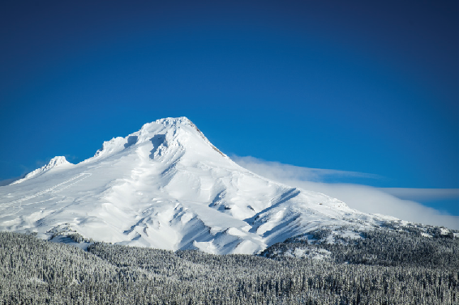
It comprises lakes, ponds, rivers, streams, wetlands etcetera. It is influenced by various abiotic components such as the volume of water, water flow, composition of oxygen, temperature, etcetera. Humans rely on freshwater biomes for drinking water, crop irrigation, sanitation and industry. Water lily, lotus, duck weeds etcetera are the common plants found here. Trout, salmon, turtles, crocodiles’ etcetera are the animals found here.
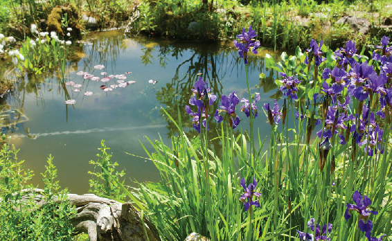
They are the largest aquatic biomes on earth. They are continuous bodies of salt water and provide a wide range of habitats for marine plants and animals. Coral reefs are a second kind of marine biomes within the ocean. Estuaries, coastal areas where salt water and fresh water mix, form a third unique marine biome. As water provides maximum mobility to marine organisms, nutrients are circulated more quickly and efficiently here than the terrestrial biomes. Apart from animals, plants such as kelp, algae, phytoplankton etc. also grow in water. Aquatic biomes are not only important for plants and animals, but also for humans. Humans use aquatic biomes for water, food and leisure activities.
Some of the threats and issues to aquatic biomes are overfishing, pollution and rise in sea level.
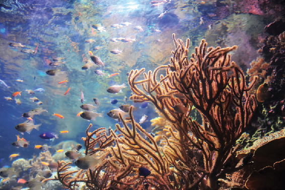
The biosphere extends from the deep ocean trenches to lush rain forests. People play an important role in maintaining the flow of energy in the biosphere. At the same time, the primary cause of today’s loss of biodiversity is habitat alteration caused by human activities. The ever increasing population results in over exploitation of biological resources. This has an adverse impact on flora and fauna on earth. There are places on earth that are both biologically rich and deeply threatened. Hence it is man’s duty to conserve and care for the earth and make it a better place to live in.
A Biosphere Reserve is a special ecosystem or specialized environment with flora and fauna that require protection and nurturing. There are 18 Biosphere Reserves in India.
The biosphere is a thin layer on, above and beneath the earth where life exists.
The place on earth where living organisms live and interact with one another and with their physical environment is called an ecosystem.
The three major components of ecosystem are biotic components, abiotic components and energy flow.
Biotic components are classified into producers, consumers and decomposers.
The functioning of the ecosystem depends on the energy flow through various levels called trophic levels.
The wide variety of living organisms that are found on the planet is called biodiversity.
The extinction of such biological diversity due to human influences or nature is called loss of bio diversity.
The geographically extensive ecosystem where living organisms are collectively found is termed as biome.
Biomes are broadly classified as terrestrial and aquatic biomes.
Biosphere has to be conserved, as it is considered to be an asset to planet earth.
1. The coldest biome on Earth is
Option a) Tundra
Option b) Taiga
Option c) Desert
Option d) Oceans
2. This is the smallest unit of biosphere.
Option a) Ecosystems
Option b) Biome
Option c) Environment
Option d) None of the above
3. Nutrients are recycled in the atmosphere with the help of certain micro organisms, referred to as
Option a) Producers
Option b) Decomposers
Option c) Consumers
Option d) None of the above
4. To which climatic conditions are Xerophytic plants specifically adapted to?
Option a) Saline and sandy
Option b) Limited moisture availability
Option c) Cold temperature
Option d) Humid
5. Why is the usage of rainforest biomes for large scale agriculture unsustainable?
Option a) because it is too wet.
Option b) because the temperature is too warm.
Option c) because the soil is too thin.
Option d) because the soil is poor.
a) Both assertion (A) and reason(R) are true; R explains A
b) Both assertion(A) and reason(R) are true; R does not explain A
c) A is true; R is false
d) Both A and R are false
1. A: Heterotrophs do not produce their own food.
R: They depend on autotrophs for their nourishment.
2. A: Hotspots are the regions characterised by numerous endemic plants and animal species living in a vulnerable environment.
R: To manage and focus on conservation work more effectively, researchers identified hotspots.
1. An area where animals, plants and microorganisms live and interact with one another is known as DASH.
2. DASH are also called Heterotrophs.
3. DASH is a system of interlocking and independent food chains.
4. DASH is an extensive large ecosystem.
5. The vegetative type commonly found in desert biomes is called DASH
6. DASH is an aquatic biome that is found where fresh water and salt water mix.
1. What is Biosphere?
2. What is an ecosystem?
3. What does the term ‘biodiversity’ mean?
4. What is meant by loss of biodiversity?
5. Mention the various terrestrial biomes.
1. Producers are also called autotrophs.
2. Biosphere provides a stable ecosystem.
1. Producers and Decomposers.
2. Terrestrial biomes and Aquatic biomes.
3. Tropical vegetation and Desert vegetation
4. Savannas and Tundra
1. Explain the various components of ecosystem.
2. Write a paragraph on the functions of an ecosystem.
3. Explain about the aquatic biomes on Earth.
1. World Wild Life Day DASH
2. International Day of Forest DASH
3. World Water Day DASH
4. Earth Day DASH
5. World Environment Day June 5th
6. World Oceans Day DASH
Locate the following on the world outline map.
1. Priairies
2. Downs
3. Tundra Biomes
4. Equatorial Biomes
Narrate the given food web of Arctic Tundra in your own words
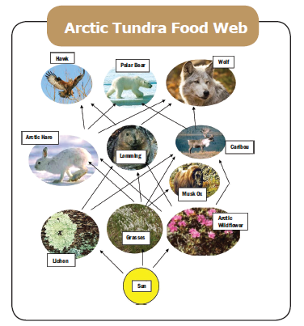
1. Environmental Geography by Savindra Singh Edition: 1995, Prayag Pustak Bhawan, Allahabad, India
2. Physical Geography by Dr. Savindra Singh Edition: 2015, Pravalika Publications, Allahabad, India.
3. Essential Environmental Studies S.P. Misra and S.N.Pandey Second Edition, Ane books Pvt. Ltd., New Delhi, India.
4. Environmental Geography by Dr. Savindra Singh Edition: 2015, Pravalika Publications, Allahabad, India.
2.http://environment. nationalgeographic.com
3. www.nasa.gov
Step 1: Open the Browser type the URL Link given below (or) Scan the QR Code.
Step 2: Register as a student or teacher with your email id.
Step 3: Select the option Video and see the Biosphere video.
Step 4: Select the option Quiz and choose the correct answer.
Website URL : https://matchthememory.com/Earthspheres